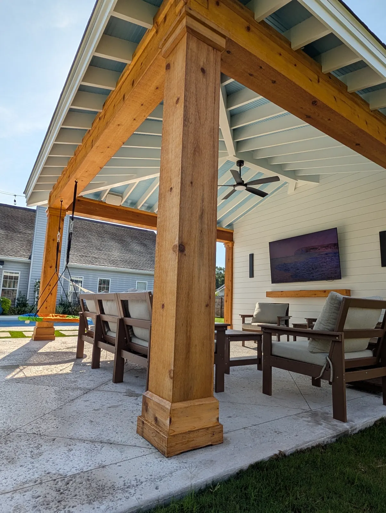
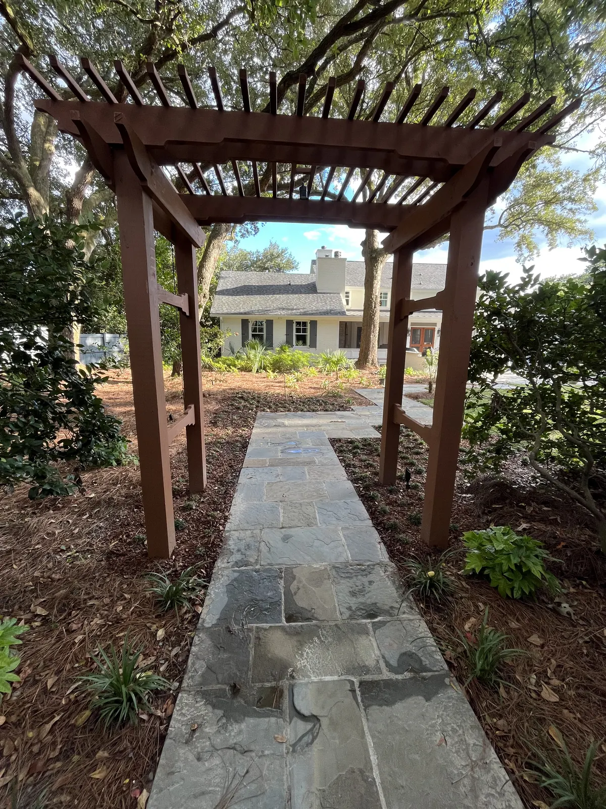

Custom Pergolas in Charleston and Mount Pleasant, SC
Pergola or pavilion?
Pergola
$10,000 – $30,000
Traditionally open, with a flat, slatted or gently sloped roof. We also build them closed in, with a solid roof, finished ceiling, electrical and post and beam trim — and it is still a pergola. The least expensive of the two, which is why most clients choose one.
Pavilion
$30,000 – $90,000+
Larger, with gable, hip and other pitched roof options, and room for a kitchen, a bathroom and storage. See pavilions →

Designed & Built In-House Pergolas Built Around How You’ll Use the Space
The first question we ask is how you want to use the space, because a pergola can be almost anything you need it to be. At one end it’s a simple garden structure — posts, beams and rafters over a seating area. At the other it’s a finished outdoor room with a roof, a ceiling, post and beam trim, electrical and a kitchen underneath, like the one we built in Summerville.
Doug and Zach Cramer do the site visits and the design themselves, and one of them is on the job every day until it’s finished. Gas, electrical and plumbing are handled by our own team, along with the permits.
What $10,000 Buys, and What $30,000 Buys
At $10,000 you get a simple pergola: no post and beam trim, no ceiling, and maybe no roof.
At $30,000 you get post and beam trim, a ceiling, a roof, electrical, and possibly a kitchen underneath.
| Pergola | $10,000 – $30,000 |
|---|---|
| Pavilion | $30,000 – $90,000+ |
There’s rarely one big cost driver. The foundation or patio underneath can be significant, and the material you choose for it matters — salt-void concrete costs less than travertine. Mostly it’s the many small things that add up as a structure gets more complex. You’ll get an exact quote once the design is set.

Covered Pergolas Metal Roofs and Closed-In Builds
Not every pergola is open. We build them closed in as well, with a solid roof, a finished ceiling, electrical and post and beam trim — and it is still a pergola. A roof is the single biggest thing that changes how a pergola feels and what it costs.
Where the house is modern, we inset the rafters between the beams instead of running them underneath. That lifts the ceiling and leaves a flush, squared-off roofline rather than the projecting rafter tails of a traditional pergola — it is what we did on the Summerville game-day backyard.
On Daniel Island the pergolas we have built are a mix: some open, some covered with a metal roof. In North Charleston, a pergola with a metal roof and a back privacy wall is what gives that yard its shade.

Open Pergolas Posts, Beams and the Planting Around Them
Left open, a pergola has no ceiling and less trim to look at, so what carries it is where it sits and what’s planted around it. We do the planting as well as the structure, which is why the two get designed together.
On our James Island woodland garden the brief was shady, green and quiet. The entry pergola is stained pressure-treated lumber, matched to a sapele tone so it picks up the wood on the house instead of fighting it. Bluestone walkways wind through the garden to a patio, and the planting — mondo grass, ferns, oakleaf hydrangeas, Japanese maples — was chosen for shade and texture.
Trellis and vines work well with a pergola, and we do both parts — we build the trellis, and we supply and plant the vines. Carolina jessamine — also called Carolina jasmine — and Confederate jasmine are the two we plant most.
A closed-in pergola gives you a room. An open one is part of the garden. Tell us how you want to use the space and we’ll say which one you’re describing.
Vines What Carolina Jessamine Does on a Pergola
It is evergreen, so the structure isn’t bare in January, and it carries fragrant yellow flowers from late winter into spring, sometimes again in the fall. It has been South Carolina’s state flower since 1924.
- Growth — moderate, and quicker once it is established in good soil with enough water. On a trellis or an arbor, reckon on 12 to 20 feet after three or four growing seasons.
- Sun — it will take light shade, but it flowers best in sun. Worth settling before you decide whether to roof the pergola it grows on.
- Pruning — after it finishes flowering, and mostly just for shape and to keep it on its support. An old vine gone top-heavy or thin at the bottom can be cut back to a few feet above the ground once it has bloomed.
One thing to know before it goes in near small children: every part of the plant is poisonous, and the sap irritates some people’s skin. The flowers are the risk, because a child can be poisoned sucking the nectar out of them. The pollen is also bad for honeybees, so if you keep hives, say so and we’ll plant you something else. Confederate jasmine is the usual alternative here — evergreen too, heavily scented in spring and summer, and salt tolerant, which counts close to the water.

Materials What Lasts on the Coast
We frame structures mainly in pressure-treated lumber. The finish trim can be a range of lumber or Hardie board, and cedar is a good option that holds up well here.
We also build metal-framed pergolas. They cost more, but they give a modern, durable look and let us build a large cantilevered pergola that timber can’t carry.
Every structure is built for hurricanes and the coastal climate. The frame is tied together with hurricane strapping, or structural screws rated to carry the same loads.
Keeping the Finish
The finish is what protects the wood out here, so it’s worth knowing the schedule before you choose one.
- Stain — reapply 8 to 12 months after the first coat, then every few years as needed.
- Paint — every 5 to 10 years, depending on the product and how exposed it is.
- Posts and fascia take direct sun and rain, so they need attention sooner than a covered ceiling does.
- No roof — with nothing over it, the whole structure takes that weather, so the paint or stain needs redoing more often than on a covered build.
We also offer linseed oil paint for exterior wood. It’s natural, long lasting and easy to maintain, though it costs more to install.
If you want the wood left natural, a clear sealer will protect it but won’t stop it going gray. On the West Ashley cabana the owners wanted the natural cedar look, so we used a stain with a little pigment matched to the cedar — it holds the color while still protecting the wood.

The Details That Matter Later
These are cheap to get right at the design stage and expensive to fix afterwards:
- Where it sits. Position and layout relative to the yard, where the sun actually falls, and how you’ll use it.
- What comes next. If you’re staging the work over a few years, we plan now for the kitchen that arrives later.
- Proportion. We use the classical orders to proportion the structure, so it looks right rather than just big enough.
- Hidden utilities. Where the electrical and everything else runs, worked out before anything is framed.
- Finish grade. Knowing the final ground level before the posts go in.
- Every amenity on the list. Speakers, lighting, a sauna — all of it decided up front.
We’d rather stage a project over a few years than rush it and build something you won’t love.
How We Build Yours
- Consultation at your home. We talk about how you’ll use the space and what budget you’re comfortable with. It’s free around Charleston, Mount Pleasant and Summerville. For Kiawah, Seabrook, Wadmalaw and Awendaw, or anywhere else more than an hour from Charleston or Summerville, there’s a charge for the proposal trip. It comes off the price if you go ahead with the build, and it is not refundable if you do not.
- Budget and design. Drawings, with optional 3D renderings at an additional cost. We match the structure to your home’s architecture.
- Permits. Almost every structure needs one, so allow about 4 to 6 weeks. A few towns exempt smaller structures under a certain square footage — Isle of Palms is one. We handle the paperwork.
- Start date. Structures usually begin within 1 to 2 months of signing, depending on how busy we are and whether permitting or HOA approval is still running.
- Build. A pergola takes one to three weeks. A pavilion takes 6 to 8 weeks. Gas, electrical and plumbing are all done by our own team.
Pergolas pair naturally with outdoor kitchens, paver patios, fire pits and landscape lighting.
Worth Reading Before You Start
Projects We’ve Built
Real jobs, with the story of how each one came together.


Frequently Asked Questions
What is the difference between a pergola and a pavilion?
A pergola is traditionally an open structure with a flat, slatted or gently sloped roof. A pavilion can have a flat or shed roof as well, but its options expand to gable, hip and other pitched forms, it can be open-sided or partially enclosed, and it is generally larger. A gazebo sits closer to a pergola in scale, a smaller garden structure, but with more decorative forms such as a domed roof. Most of our clients choose a pergola because it costs less.
How much does a pergola cost?
Between $10,000 and $30,000. At $10,000 it is a simple pergola with no post and beam trim, no ceiling and maybe no roof. At $30,000 you get post and beam trim, a ceiling, a roof, electrical and possibly a kitchen underneath. A pavilion runs $30,000 to $90,000 and up.
Does a pergola have to be open on top?
Traditionally, yes — a pergola is an open structure, and its roof is flat, slatted or gently sloped. We also build them closed in, with a solid roof, a finished ceiling, electrical and post and beam trim, like the pergola kitchen in Summerville. Once you want a pitched roof form such as a gable or a hip, you are into pavilion territory.
Do I need a permit for a pergola in Charleston?
Almost always, yes. Nearly every structure needs a permit, though some towns exempt smaller structures under a certain square footage, such as Isle of Palms. We handle the permitting as part of the build. Allow about four to six weeks for approval before work starts.
How long does a pergola take to build?
One to three weeks, depending on size and complexity. A pavilion takes six to eight weeks. That is on top of the four to six weeks for permitting.
What are your pergolas built from?
The structure is mainly framed in pressure-treated lumber. Finish trim can be a range of lumber or Hardie board, and cedar is a good option. We also build metal-framed pergolas, which cost more but give a modern, durable look and allow a large cantilevered design.
How often does the finish need redoing?
Stain should be reapplied 8 to 12 months after the first coat, then every few years as needed. Paint lasts 5 to 10 years depending on the product and exposure. Posts and fascia take direct weather, so they need attention sooner than a covered ceiling. A clear sealer keeps the wood natural but will not stop it going gray.
Will it stand up to a hurricane?
Our structures are built for hurricanes and the coastal climate. The frame is tied together with hurricane strapping, or structural screws rated to carry the same loads. Keeping the paint or stain up to date is the other half of protecting it out here.
Showcasing our Recent Works
Explore a selection of our recent pergola and outdoor structure projects. 1 / 6
1 / 6 2 / 6
2 / 6 3 / 6
3 / 6 4 / 65 / 6
4 / 65 / 6 6 / 6
6 / 6Areas We Serve
Cramers Landscaping provides its services throughout:
Get in Touch
Let’s talk about your yard
Tell us what you have in mind and we’ll put a quote together for it. The consultation at your home is free around Charleston, Mount Pleasant and Summerville. For Kiawah, Seabrook, Wadmalaw and Awendaw, or anywhere else more than an hour from Charleston or Summerville, there’s a charge for the proposal trip. It comes off the price if you go ahead with the build, and it is not refundable if you do not.
Based In
9153 Markleys Grove Blvd, Summerville, SC
We come to you. There is no office or showroom to visit.
Phone
Hours
Monday – Friday: 8:00 AM – 5:00 PM
Saturday: 9:00 AM – 2:00 PM
Sunday: Closed